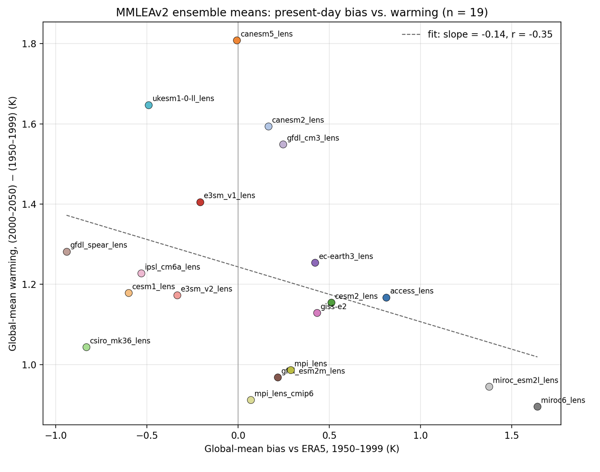
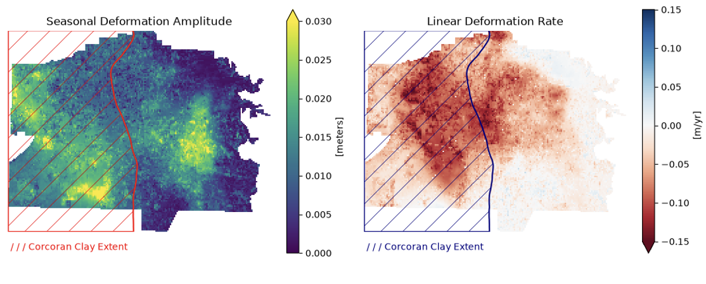
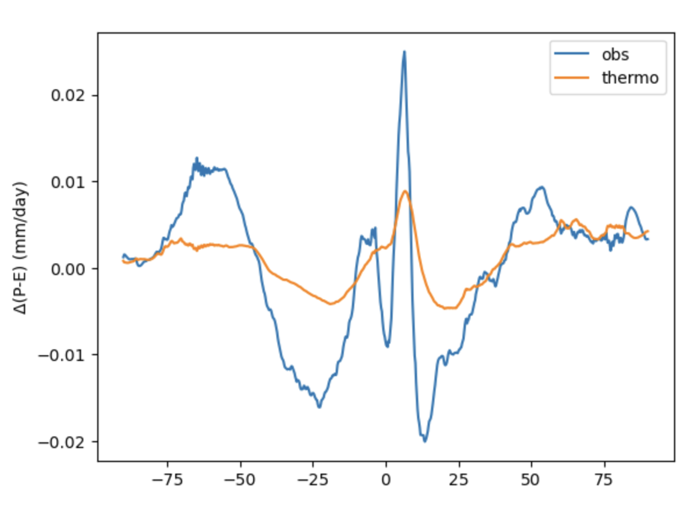
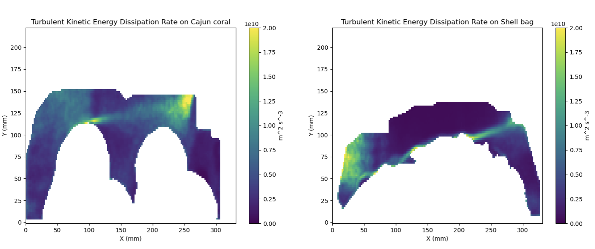

Currently I am a part of the UT Dallas Climate Dynamics and Prediction Lab under Dr. Xian Wu. I have done some work analysing the Multi-Model Large Ensemble Archive, namely comparing ensemble mean temperature bia against ensemble mean warming. This yielded complicated results with a poor linear fit.

During the summer of 2026 I was a DAAD RISE intern at TU Bergekademie Freiberg in Germany under Mohammad Taani. I unwrapped the InSAR data from Sentinel-1 by using the straight-forward Python package Dolphin and gathered well head data from SGMA Data Viewer. Then with some processing and curve fitting from Xarray and Scipy I was able to calculate total water storage change and elastic/inelastic deformation rate. I compared the elastic deformation with aquifer confinement following Razaei 2019 but found limited similarity. I also presented at the RISE Heidelberg conference for the internship.

During the fall of 2025 I was a part of the UT Dallas Climate Dynamics and Prediction Lab under Dr. Xian Wu. I worked with ERA5 data on the NCAR HPC to compare observations with simple thermodynamic models from Held and Soden 2006.

During the summer of 2025 I was an NSF REU intern at the Louisiana Universities Marine Consortium under Dr. Kevin Du Clos. For my project I looked at the hydrodynamics around different artificial oyster reef materials, including shell bags and Cajun Coral. To do this I placed the materials in the LUMCON flume and measured the velocity field around them using particle image velocimetry. I wrote a short Python script to calculate the velocit gradient matrix from the PIV velocity time series data, and accordingly some hydrodynamic parameters relevant to oyster larvae settlement (free stream velocity, turbulent kinetic energy dissipation rate, and bed shear stress). I also had the opportunity to do some microscope work identifying oyster larvae and diatoms, as well as going on fun field trips in the bayou.
